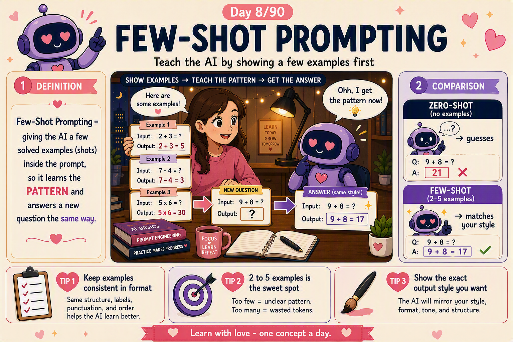

📜 The 30-second brief
Few-shot prompting is when you give the AI a handful of worked examples — a few input→output pairs — right inside the prompt, so it can copy the pattern, format, and tone you want before it tackles the real task. Instead of only telling the model what to do, you show it what "good" looks like.
Here is the mindset shift: a language model is a pattern-completer. An instruction says what to do; examples show exactly how. This is called in-context learning — the model picks up the pattern from your examples on the spot, without any retraining or weight changes. When it's done, the examples are forgotten; they only shaped this one answer.
💌 A fresh analogy: teaching a card game by playing it
Imagine teaching a friend a new card game. You could read every rule aloud — dry, confusing, easy to forget. Or you could just deal two or three practice hands and let them watch how it flows. Within minutes they've caught the rhythm: what beats what, when to play, how a turn ends. They learned the pattern by seeing it, not by being lectured.
Few-shot prompting is those practice hands. Two or three clean examples teach the model the "shape" of the task — the structure, the vocabulary, the vibe — far faster than a paragraph of instructions ever could. Show, don't just tell.
The lesson: examples are a language of their own. A few good ones often steer a model better than a page of careful wording.
⚙️ Why few-shot works (the mechanism)
- Models complete patterns. An LLM's whole job is "what likely comes next" — so if the prompt already shows a repeating pattern, it will faithfully continue it.
- Examples pin down format. One instruction can be read ten ways; an example nails the exact output shape — JSON keys, labels, length, punctuation, tone.
- In-context learning. The model adapts to your task at inference time, using only what's in the prompt — no fine-tuning, no new training data.
- They resolve ambiguity. Fuzzy or subjective tasks ("classify the sentiment," "match our brand voice") become concrete once the model can see what you mean.
- They anchor the scope. Examples quietly tell the model how much to say and where to stop, reducing rambling and drift.
🧩 The spectrum: zero, one, and few-shot
| Style | What it looks like |
|---|---|
| Zero-shot | Just an instruction, no examples — "Classify this review as positive or negative." |
| One-shot | The instruction plus a single example to lock the format. |
| Few-shot | The instruction plus 2–5+ examples showing the pattern and edge cases. |
| Many-shot | Lots of examples for tricky tasks — powerful, but costs tokens and can dilute focus. |
The rule of thumb: start zero-shot, add examples only when results drift. Each example costs tokens (and money), so reach for the fewest that make the output reliable.
💡 Why it matters (and where it shines)
- Consistent formatting. Force clean JSON, fixed labels, or a strict template every time — essential for anything a program will read next.
- Brand & tone matching. A few sample replies teach the model your exact voice better than "be friendly and professional."
- Nuanced classification. Subjective categories (urgent vs. not, on-topic vs. off) get far more accurate when the model can see your judgement calls.
- Cheaper than fine-tuning. You get task-specific behaviour instantly, with no training run and no dataset to curate.
- It's the everyday power-tool — the fastest way to turn a vague answer into a reliable, repeatable one.
🏭 Real-world example: taming the ticket triage
A support team asks an AI to label incoming tickets. Zero-shot — "Tag each ticket as Billing, Bug, or Feature-Request" — the model half-guesses, invents new tags, and phrases them differently each time. Useless for a dashboard.
So they add three labelled examples in the exact output format: a billing message → Billing,
a crash report → Bug, a "please add dark mode" → Feature-Request. Now every
answer snaps to one of the three allowed tags, spelled identically, every single time. Same
model, same task — the examples turned chaos into a clean, machine-readable pipeline.
🛡️ How to do few-shot well (practical toolkit)
- Keep examples consistent. Same structure, same delimiters, same style across all of them — the pattern must be obvious.
- Match the real format. Write your examples in the exact shape you want the answer back in (labels, JSON, length).
- Cover the edge cases. Include a tricky or borderline example so the model learns the hard calls, not just the easy ones.
- Make sure examples are correct. A wrong example teaches a wrong pattern — the model will copy your mistake faithfully.
- Balance your labels. For classification, show each category — skewed examples create skewed answers.
- Fewest that work. Start with 2–3, add more only if needed; extra examples cost tokens and can blur the focus.
⚠️ Common misconceptions
- "More examples always help." No — past a point they waste tokens and can dilute the pattern.
- "Few-shot trains the model." No — nothing is saved; it only shapes the current prompt (in-context learning).
- "Examples can be sloppy." No — the model copies exactly what you show, flaws included.
- "It removes hallucination." No — it improves format and consistency, but the model can still invent content (Note 6).
- "Order doesn't matter." It can — models often lean on the most recent examples, so arrangement can nudge results.
🎓 Quick self-test (exam-style)
- What is few-shot prompting?
Giving the model a few worked examples in the prompt so it copies the pattern, format, and tone. - Why does it work?
LLMs complete patterns; examples show exactly what "good" looks like — this is in-context learning. - Does it retrain the model?
No — it only shapes the current answer; nothing is saved. - Zero vs. one vs. few-shot?
Zero = no examples, one = a single example, few = 2–5+ examples. - Name two best practices.
Keep examples consistent and correct, and match the exact output format you want. - Does it stop hallucination?
No — it improves consistency, but the model can still fabricate content.
📚 Key terms to carry forward
- Few-shot prompting — steering a model with a few in-prompt examples.
- Zero-shot — instruction only, no examples.
- In-context learning — adapting to a task from the prompt alone, no retraining.
- Shot — a single worked example inside the prompt.
- Fine-tuning — the heavier alternative: actually retraining the model on data (a later note).
- Prompt template — a reusable structure that holds your examples and the new input.
⚡ 60-second flashcard (last look before the exam)
| Define it in one breath | Showing the AI a few examples in the prompt so it copies the pattern. |
| The mental model | Teaching a card game by dealing a few practice hands — show, don't just tell. |
| Why it works | Models complete patterns; examples pin down format, tone, and scope. |
| The mechanism | In-context learning — adapts at inference time, no retraining. |
| The spectrum | Zero-shot · One-shot · Few-shot · Many-shot. |
| Top practices | Consistent format · correct examples · cover edge cases · fewest that work. |
| Biggest win | Reliable, machine-readable, on-brand outputs — every time. |
| Not training | Nothing is saved; it only shapes the current prompt. |
| Golden rule | Start zero-shot; add examples only when results drift. |
| Watch out | Wrong or skewed examples teach wrong or skewed answers. |
🖼️ Today's cheat sheet
The same image shared on the LinkedIn post for Note 8.

✨ Next spark
If a few examples teach the model what to produce, the next step is teaching it how to think. Note 9 — Chain-of-Thought — is where we ask the model to reason step by step, so it solves harder problems out loud instead of guessing in one breath. 💕